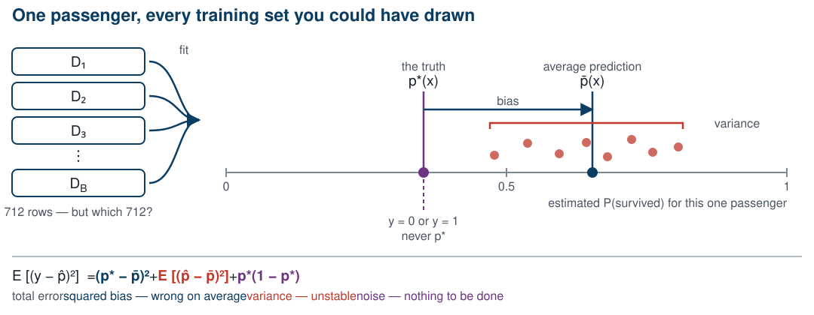
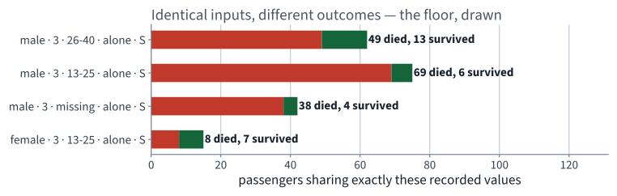
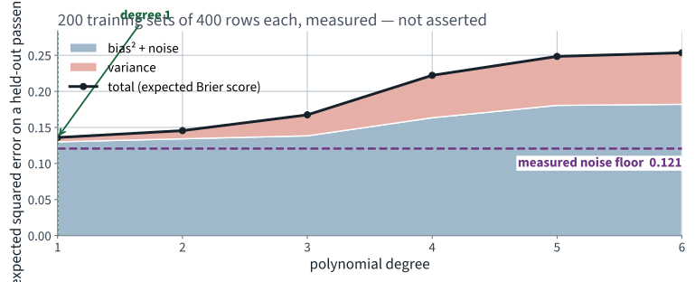
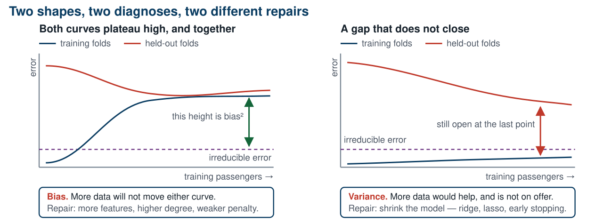
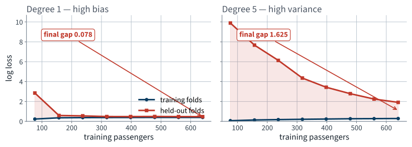
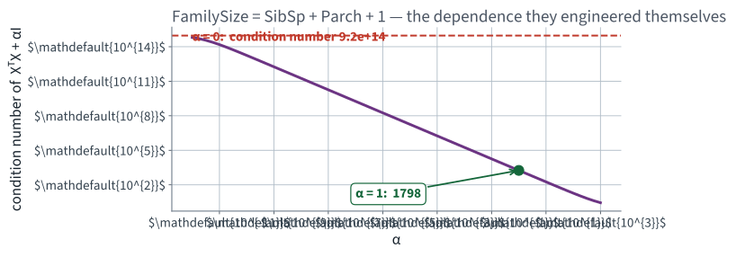
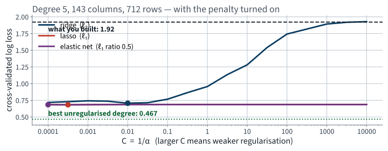
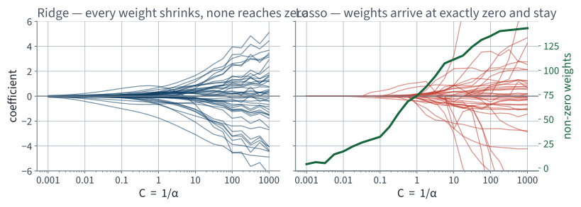
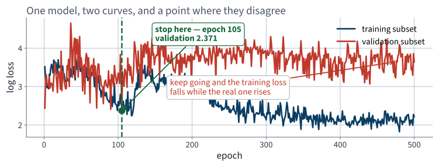

Why more capacity stops helping, and what to do about it
Lecture 5 Géron Ch. 4
One identity, three terms, and the one line that repairs an ill-posed fit
Applications of Machine Learning
BSc Mathematics of Artificial Intelligence · Third year
Worked example: the Titanic passenger manifest
The previous lecture fitted a logistic regression to 712 Titanic passengers and then added polynomial capacity, recording both curves at every degree:
| Degree | Columns | Training log loss | Held-out log loss |
|---|---|---|---|
| 1 | 22 | 0.395 | 0.468 |
| 2 | 32 | 0.381 | 0.467 |
| 3 | 52 | 0.355 | 0.538 |
| 5 | 143 | 0.286 | 1.922 |
One curve falls forever. The other turns and climbs.
| min | What |
|---|---|
| 0–10 | where we are, and the two questions the sweep cannot answer |
| 10–30 | the mathematics — the bias–variance decomposition, derived |
| 30–70 | the method — measuring the three terms, reading learning and validation curves, ridge, lasso, elastic net, early stopping |
| 70–85 | choosing a penalty honestly, and the test set once |
| 85–90 | the notebook |
examinable The decomposition and what each expectation is over; reading a diagnosis off a pair of curves; the three penalties and what each does to the coefficients. not examinable Solver names, wall-clock timings, and the Titanic feature engineering.
The mathematics
Géron §4.4 — the identity that says what a generalisation error is made of
20 minutes · examinable
Not the passenger. Fix one passenger $x$ and ask about them repeatedly.
Every expectation in this derivation is over those two sources and nothing else. The model is deterministic given $D$.
| Symbol | Meaning | Observed? |
|---|---|---|
| $\hat{p}_D(x)$ | what your model predicts, having seen $D$ | yes |
| $\bar{p}(x) = \mathbb{E}_D[\hat{p}_D(x)]$ | the average prediction over all training sets you could have drawn | no — estimated |
| $p^{*}(x)$ | the true probability that this passenger survives | never |
$y \in \{0, 1\}$ is what actually happened. It is never $p^{*}$, and that gap becomes the third term.
Expected squared error at one passenger
Averaged over passengers this is the Brier score the previous lecture already reported. We decompose it at a single $x$ and then average — the decomposition is linear in $x$, so nothing is lost by doing it one passenger at a time.
Hold $y$ fixed and average over $D$ only:
Expand the square. The cross term is $2\,(y - \bar{p})\,\mathbb{E}_D[\bar{p} - \hat{p}_D] = 0$, because $\bar{p}$ is defined as $\mathbb{E}_D[\hat{p}_D]$.
The second term is the variance of your predictor. It says how much the answer moves when the 712 rows move — and it does not mention the truth at all.
An identity, not an approximation. We check it numerically later in this lecture, and the residual is $2.8\times10^{-17}$.
Repeat the trick on $(y - \bar{p})^{2}$, this time inserting $p^{*}$:
Same cancellation: $\mathbb{E}_y[y] = p^{*}$, so the cross term vanishes again. And $\operatorname{Var}(y) = p^{*}(1-p^{*})$ because $y$ is Bernoulli.
| Term | Means | Cured by |
|---|---|---|
| squared bias | wrong on average — the model family cannot reach the truth | more capacity |
| variance | unstable — a different sample gives a different answer | less capacity, or more data |
| noise | the label is not a function of the recorded columns | nothing |
Generally, for any target the identity is $\mathbb{E}[(y-\hat{f})^{2}] = \text{bias}^{2} + \text{variance} + \operatorname{Var}(y \mid x)$. Above, $p^{*}(1-p^{*})$ is that last term for a Bernoulli label — one instance of the identity, not the identity itself.
The first two repairs point in opposite directions. That is the whole difficulty, and it is why it is called a trade-off.

Bias is the distance from the centre of the spread to the truth. Variance is the width of the spread. Neither is visible from one training set.
The identity is exact for squared error. Our headline metric is log loss, and log loss does not split into three additive terms like this.
Saying “bias–variance” about a log loss curve is common and slightly wrong. Doing it knowingly, and saying which metric you decomposed, is the difference.
| The result | What it lets you do |
|---|---|
| Three additive terms | ask which one is large before choosing a repair |
| Variance does not mention $p^{*}$ | estimate it without knowing the truth — refit and look at the spread |
| Noise depends only on $x$ | measure a floor that no model of these columns can beat |
| The gap between two curves | read a diagnosis off a plot in ten seconds |
The rest of this lecture is that table, executed: measure all three terms on the pipeline of the previous lecture, then repair the one that turned out to be large.
The method
40 minutes · examinable
$p^{*}$ is never observed — but where several passengers share exactly the same recorded values, every model of those columns must give them the same number. Whatever their outcomes do inside that cell is a floor.
keys = ["Sex", "Pclass", "AgeBand", "FamBand", "Embarked"]
cells = full.groupby(keys, observed=True)["Survived"].agg(["sum", "count"])
# k(m-k)/(m(m-1)) is the unbiased estimator of p(1-p) from m Bernoulli draws
multi = cells[cells["count"] >= 2]
var = multi["sum"] * (multi["count"] - multi["sum"]) / (
multi["count"] * (multi["count"] - 1))
noise = (var * multi["count"]).sum() / multi["count"].sum()
133 distinct cells; 102 of them hold at least two passengers, covering 858 people.

62 third-class men aged 26 to 40, travelling alone from Southampton, with every recorded value identical. 13 of them survived. No model of these columns can separate them.
0.121
Brier score. Measured, not assumed.
56 of the 102 shared cells are mixed — 657 passengers sit in a cell where the outcome went both ways. That is 74% of everyone on board, living inside a cell whose answer cannot be certain.
It is an under-estimate of the true noise: two passengers in the same cell may still differ in ways the manifest never recorded. The real floor is at least this high.
rng = np.random.default_rng(42)
draws = [rng.choice(len(X_train), size=400, replace=False)
for _ in range(200)]
P = np.array([pipeline(degree=d).fit(X_train.iloc[s], y_train.iloc[s])
.predict_proba(X_test)[:, 1]
for s in draws]) # 200 x 179
pbar = P.mean(axis=0)
variance = ((P - pbar) ** 2).mean(axis=0)
bias2_pn = (y_test.values - pbar) ** 2 # bias^2 + noise, together
total = ((y_test.values - P) ** 2).mean(axis=0)
200 training sets of 400 rows each, drawn from the 712 we hold. This is the expectation over $D$, done by brute force — which is the only way to see a quantity defined over training sets you did not draw.
Bias and noise cannot be separated without $p^{*}$, so they are reported as one column. The floor above is what splits them.
>>> abs(total.mean() - variance.mean() - bias2_pn.mean())
2.7755575615628914e-17
Machine epsilon on a double. The three columns you are about to see are not a model of the error — they are the error, rearranged.
Do this every time you implement a decomposition. If the residual is not at floating-point noise you have a bug, and the picture will still look plausible.

Between degree 1 and degree 6 the variance term is multiplied by twelve. Everything else is nearly flat.
| Degree | bias² + noise | variance | total |
|---|---|---|---|
| 1 | 0.130 | 0.006 | 0.136 |
| 2 | 0.134 | 0.011 | 0.146 |
| 3 | 0.138 | 0.029 | 0.167 |
| 4 | 0.163 | 0.059 | 0.222 |
| 5 | 0.181 | 0.068 | 0.248 |
| 6 | 0.182 | 0.071 | 0.253 |
Read the first column: 0.130 at degree 1, against a measured noise floor of 0.121. Almost all of it is noise. The squared bias of a degree-1 logistic model on these features is under 0.01.
So there was never much bias to buy back. Every extra degree bought variance and nothing else.
The training curve
Falls forever. It is measured on the rows that were fitted, so it sees no variance term at all — the model was tuned to those exact rows.
The held-out curve
Turns at degree 2 and climbs. It is the sum of all three terms, and from degree 3 the variance term dominates.
These are the only two shapes, and telling them apart takes ten seconds once you know what you are looking at.

The repairs are on the diagram because they are opposites. Applying the left-hand repair to a right-hand curve is the most common wasted afternoon in applied machine learning.
from sklearn.model_selection import learning_curve
n, train, valid = learning_curve(
pipeline(degree=d), X_train, y_train, cv=cv,
train_sizes=np.linspace(0.12, 1.0, 8),
scoring="neg_log_loss", shuffle=True, random_state=42)
Same two curves as the degree sweep, a different knob — and the shape answers a question the degree sweep cannot: would more data help?
Note shuffle=True. Without it the
sub-samples are the first $n$ rows of the frame, in whatever order the frame
happens to be in.

Left: the curves have met. Right: they have not, and the gap is still falling — the model is starved of rows, not of capacity.
| Degree 1 | Degree 5 | |
|---|---|---|
| Held-out log loss at 76 rows | 2.853 | 9.889 |
| Training log loss at 640 rows | 0.395 | 0.286 |
| Held-out log loss at 640 rows | 0.474 | 1.911 |
| Gap at 640 rows | 0.078 | 1.625 |
The degree-5 held-out curve falls from 9.9 to 1.9 as rows arrive, and is still falling steeply at 640. Extrapolating, this model would need several times our dataset before it became competitive.
There are 891 passengers on the Titanic. There will never be more. Rows are not a knob we can turn, so the only repair left is to shrink the model.
| Curve | $x$-axis | Answers |
|---|---|---|
| Learning curve | training-set size | would more rows help? |
| Validation curve | one hyperparameter | which setting is right, and is the optimum interior? |
from sklearn.model_selection import validation_curve
train, valid = validation_curve(
pipeline(degree=5), X_train, y_train, cv=cv,
param_name="clf__C", param_range=np.logspace(-4, 4, 17),
scoring="neg_log_loss")
Read the ends of a validation curve first. A minimum sitting on the edge of the range means the range was too narrow and the answer you read off it is an artefact of where you stopped looking.
You are minimising a sum of two terms that move in opposite directions. The minimum is interior, and on this dataset it sits at degree 1 or 2 — exactly where the held-out curve turned.
The word “trade-off” is doing real work. There is no setting that is good at both.
Diagnosis
Three faults, and one term repairs all three
1.922
Degree 5 is almost three times worse than saying nothing at all.
Not worse than the best model. Worse than the anchor of 0.666 — worse than a model that has learned only how many people died.
Held-out accuracy at degree 5 was 76.0% — poor, but not absurd. Log loss went to 1.922. The two metrics disagree because they measure different things.
A single passenger given probability 0.01 who then survives contributes 4.6 to the average on its own. Accuracy records that passenger as one error and moves on.
Log loss is unbounded above. That is not a defect — it is the metric saying that confident-and-wrong is a different failure from wrong.
| Degree 1 | Degree 5 | |
|---|---|---|
| Columns | 22 | 143 |
| Training rows | 712 | 712 |
| Rows per weight | 32 | 5 |
| Variance term, Brier | 0.006 | 0.068 |
Five rows per weight. Move one passenger between folds and the fitted surface moves with them.
This is the diagnosis the derivation was built to deliver, and it is not yet the whole story. Two more faults are underneath it.
Suppose that in the expanded feature space some $\boldsymbol\theta$ separates the classes perfectly. Then
so the training log loss falls monotonically towards zero as $\lVert\boldsymbol\theta\rVert \to \infty$. The infimum is never attained.
| Degree | 1 | 2 | 3 | 4 | 5 | 6 |
|---|---|---|---|---|---|---|
| Converged | yes | yes | yes | no | no | no |
| Largest $|\theta_j|$ | 4.87 | 5.43 | 6.32 | 18.70 | 11.07 | 3.98 |
Recall from the previous lecture that
FamilySize = SibSp + Parch + 1 exactly, on every row. Standardise
the five numeric columns, form
$\mathbf{X}^{\intercal}\mathbf{X}$, and look at its spectrum:
>>> np.linalg.eigvalsh(Z.T @ Z)
array([1.81e-12, 4.29e+02, 5.43e+02, 7.90e+02, 1.80e+03])
The smallest eigenvalue is zero to the precision the arithmetic allows. Four columns of information in five columns of data.
Condition number about $9\times10^{14}$. A double carries about $10^{16}$ of relative precision, so roughly one significant digit survives the solve.
If $\mathbf{X}^{\intercal}\mathbf{X}\,\mathbf{v} = \lambda\mathbf{v}$, then
The bound on the right does not mention $\lambda_{\min}$ at all. Whatever the data do — exact collinearity included — the conditioning is controlled by a number you choose.
At $\alpha = 1$ the condition number of our singular matrix falls from $9\times10^{14}$ to 1798.
And $\kappa$ is what set the step count for gradient descent in the previous lecture. The penalty is not only a statistical device; it is what makes the optimisation tractable.

A straight line of slope $-1$ over twelve decades: in this regime the condition number is simply $\lambda_{\max}/\alpha$. The dependence in the data is not repaired — it is dominated.
| Fault | Evidence | A statement about |
|---|---|---|
| Variance | held-out minus training gap of 1.636 at degree 5 | the estimator |
| No minimiser | lbfgs stops at the iteration cap from degree 4 up | the objective |
| No unique minimiser | rank 23 of 29; an eigenvalue at $10^{-12}$ | the design matrix |
One term repairs all three, and it is the same term in every case.
The method
Ridge, lasso, elastic net, and stopping early
Stop asking for the best fit. Ask for the best fit among small models.
$\Omega$ penalises the size of the weights; $\alpha$ says how much you care. Setting $\alpha = 0$ recovers exactly the previous lecture.
Constraining the model is one of the two cures for variance, and the only one available when the dataset is fixed at 891 rows.
Also called Tikhonov regularisation; the book gives both names.
Differentiate and set to zero, exactly as in Lecture 2:
$\mathbf{A}$ is the identity with a zero in the top-left cell — the identity minus the row and column belonging to the bias term.
Now the objective is coercive: as $\lVert\mathbf{w}\rVert \to \infty$ the penalty $\to \infty$ while the log loss is bounded below by zero. A minimiser exists, and strict convexity makes it unique.
Diagnoses 2 and 3 are both gone, and we have not looked at the data once.
LogisticRegression does not take $\alpha$. It takes
C.
C → large $\alpha$ → strong regularisationC → weak regularisation; C=1e6 is what switches it offC=1.0 with penalty="l2":
logistic regression in scikit-learn is regularised unless you say
otherwiseThe previous lecture turned it off on purpose, so that the coefficients it read were the data's. That choice is what left three faults to repair.
The penalty $\sum \theta_j^2$ treats every weight
identically. If Fare is a price and SibSp is a count
of people, a “weight of 1” means two unrelated things and the
penalty falls unequally on them.
StandardScaler is already inside the
pipeline, fitted per fold. A penalty is the reason it is not optional.
Least Absolute Shrinkage and Selection Operator. The word selection is the point: lasso drives weights to exactly zero, so it performs feature selection as a side effect of fitting.
Ridge shrinks everything and eliminates nothing.
Look at the gradient of the penalty near $\theta_j = 0$.
Ridge
The push towards zero fades as you approach zero. You arrive only in the limit.
Lasso
The push keeps its size right up to zero. If the data pulls with less than $\alpha$, the weight reaches zero and stops.
At $\theta_j = 0$ the absolute value is not differentiable; the subgradient is the whole interval $[-1, 1]$, and any data pull inside that interval is held at exactly zero.
$r$ is the mix — l1_ratio in scikit-learn.
$r = 0$ is ridge, $r = 1$ is lasso.
One of the two holds here: $\text{Age}$ and $\text{Age}^2$ are about as correlated as two columns get. The features do not outnumber the instances — 143 columns from 712 rows.
Cs = np.logspace(-4, 4, 17)
for name, kw in (("ridge", dict(penalty="l2", solver="lbfgs")),
("lasso", dict(penalty="l1", solver="saga")),
("elastic", dict(penalty="elasticnet", solver="saga",
l1_ratio=0.5, max_iter=3000))):
for C in Cs:
s = cross_val_score(pipeline(degree=5, C=C, **kw),
X_train, y_train, cv=cv,
scoring="neg_log_loss")
Three penalties, 17 values of C, ten folds each
— three validation curves on one axis. Note the solver=
changes: not every solver supports every penalty, and scikit-learn raises
rather than silently ignoring the request.

Every curve is far below the dashed line. None of them reaches the dotted one.
| Penalty at degree 5 | Best C | Log loss | Non-zero weights |
|---|---|---|---|
| none — the previous lecture | — | 1.922 | 143 |
| ridge | 0.01 | 0.706 | 143 |
| elastic net, $r = 0.5$ | 0.0001 | 0.684 | 3 |
| lasso | 0.00032 | 0.683 | 3 |
Ridge alone removes 1.215 of log loss. Lasso removes 1.239 and throws away 140 of the 143 columns while doing it.
Both minima sit near the strong-penalty end of the
range. Widen the grid before believing either — and the lasso curve is
nearly flat there, so “the best C” is a plateau, not
a point.
| Model | Cross-validated log loss |
|---|---|
| Degree 5, lasso, tuned | 0.683 |
| Degree 2, no penalty at all | 0.467 |
The best regularised degree-5 model does not beat the plain degree-2 model we already had.
Regularisation repaired an over-complex model. It did not turn it into a better one than the simple model, because there was never much bias to buy back — the decomposition said so twenty minutes ago, and this is what that sentence looks like in a table.
What it is not is a way to make an over-parameterised model beat a well-chosen one on a dataset this small.
paths = []
for C in np.logspace(-3, 3, 25):
m = pipeline(degree=5, C=C, penalty=pen, solver=sol).fit(X_train, y_train)
paths.append(m[-1].coef_[0].copy()) # 143 weights per row
One row of 143 weights per value of C. Plot each
weight against C and the two penalties become visibly different
objects.

Left: every path approaches zero and none arrives. Right: paths sit at exactly zero and leave one at a time as the penalty weakens.
C the lasso count rises from 5 non-zero
weights to 142 of the 143. Every point on that line is a different model,
and cross-validation is what picks one.
Fit iteratively, and stop before the optimiser gets where it is going.
Géron calls it a “beautiful free lunch”: no penalty term and no extra term in the objective — just a stopping rule. The knob is the epoch count, and it is a hyperparameter like any other.
clf = SGDClassifier(loss="log_loss", penalty=None, learning_rate="constant",
eta0=0.0015, random_state=42,
warm_start=True, max_iter=1, tol=None)
for epoch in range(500):
clf.fit(Z_train, y_a) # warm_start: resume, do not restart
train.append(log_loss(y_a, clf.predict_proba(Z_train)[:, 1], labels=[0, 1]))
valid.append(log_loss(y_b, clf.predict_proba(Z_valid)[:, 1], labels=[0, 1]))
warm_start=True with max_iter=1 is
what makes each call one epoch of the same fit.
penalty=None is deliberate: early stopping should be the only
regularisation in the room.
The transform is fitted on the training part only, outside the loop, and applied to both. Refitting it inside the loop would leak, 500 times over.

Epoch 105 is the best model this run ever holds. Running to epoch 500 costs 1.274 of log loss and never announces it.
| Epoch 105 | Epoch 500 | |
|---|---|---|
| Training log loss | 2.458 | 2.219 |
| Validation log loss | 2.371 | 3.645 |
The stopping epoch is chosen by looking at held-out data. It must be chosen on validation rows, never on the test set.
| Repair | Keeps $\lVert\boldsymbol\theta\rVert$ small by | Zeros? |
|---|---|---|
| Ridge | penalising $\sum\theta_j^2$ | no |
| Lasso | penalising $\sum\left|\theta_j\right|$ | yes |
| Elastic net | both, mixed by $r$ | yes |
| Early stopping | starting at zero and not going far | no |
All four reduce variance by shrinking the set of models the fit is allowed to reach. All four increase bias. Which is why all four need $\alpha$ — or an epoch count — chosen by cross-validation.
Further ground
15 minutes · examinable
best_C, best_score = None, np.inf
for C in np.logspace(-4, 4, 17):
m = pipeline(degree=3, C=C).fit(X_train, y_train)
score = log_loss(y_test, m.predict_proba(X_test)[:, 1])
if score < best_score:
best_C, best_score = C, score
best_score is a minimum over seventeen noisy
estimates, and the minimum of noisy estimates is biased downward
even when every estimate is individually unbiased. The code never writes to
the test set. It reads it seventeen times, and reading is enough.
20 splits. On each: run the loop above, and also the honest
version that picks C by 5-fold cross-validation inside
the training part. Score both on the same held-out rows.
| Reported number | Log loss | Spread over 20 splits |
|---|---|---|
| Chosen on the test set, scored on the test set | 0.451 | 0.049 |
| Chosen by cross-validation, scored on the test set | 0.470 | 0.045 |
Optimism: 0.019 of log loss, about 4.1%. On 13 splits of
20 the first number is the flattering one, and the two procedures picked the
same C on 7 splits of 20.
It is small.
0.019 against a split-to-split spread of 0.045. On one split you would never see it. Seventeen candidates is a small search.
It is real, and one-sided.
13 splits of 20 flattered. It never averages away, and it grows with the number of candidates you try.
gs = GridSearchCV(pipeline(degree=3), {"clf__C": np.logspace(-4, 4, 17)},
scoring="neg_log_loss", cv=cv).fit(X_train, y_train)
print(-gs.best_score_) # the honest estimate
print(log_loss(y_test, gs.predict_proba(X_test)[:, 1])) # the test set, once
Same seventeen candidates, same runtime, two numbers instead of one. Report both. The second is allowed to be worse than the first, and if it is much worse that is itself the finding.
The standing rule, extended by eleven words: nothing derived from the test set may appear in the training path — including the choice of any hyperparameter.
for name, m in candidates.items():
m.fit(X_train, y_train)
p = m.predict_proba(X_test)[:, 1]
print(name,
log_loss(y_test, p, labels=[0, 1]),
brier_score_loss(y_test, p),
accuracy_score(y_test, p >= 0.5))
179 passengers, untouched since the split in the previous lecture. Five candidates, all of whose hyperparameters were fixed before this cell ran.
| Model | Log loss | Brier | Accuracy |
|---|---|---|---|
| Degree 5, no penalty — where the sweep ended | 1.727 | 0.189 | 74.9% |
| Degree 5, ridge, tuned | 0.804 | 0.173 | 77.1% |
| Degree 5, lasso, tuned | 0.677 | 0.244 | 65.9% |
| Degree 1, scikit-learn defaults | 0.433 | 0.134 | 82.7% |
| Degree 2, no penalty — the winner | 0.427 | 0.134 | 82.7% |
The winner improves on the degree-5 model the previous lecture finished with by 1.300 of log loss.
Degree 2, no penalty, chosen by reading a held-out curve.
Row four deserves as much attention:
LogisticRegression() with every default left alone — degree
1, C=1.0, penalty="l2" — scores 0.433.
Statistically it is the same model as the winner.
Report it anyway. The alternative is choosing the interesting model over the better one.
A negative result you can explain is a result. A positive result you cannot explain is a liability.
The brief asked for calibrated probabilities and a defensible cut-off, not for a headline. Against that brief:
That third bullet belongs in the report. A test set of 179 cannot support the comparisons people will want to make with it.
C) chosen on validation folds, never on the test set?Six questions. The fifth is the one people skip, and it is the one that would have saved us an hour today.
np.logspace(-4, 4, 17) to
(-8, 4, 25). Does the lasso minimum move? If it does, the
number on the slide above was an artefact of where we stopped looking, and
you have just done checklist item four.
01 · What machine learning is, and how we will work
03 · Classification and its metrics
05 · Regularisation and the bias–variance trade-off
07 · Ensembles and random forests
08 · Dimensionality reduction and unsupervised learning
09 · Neural networks, from the perceptron up
14 · Detection and segmentation
18 · Attention and transformers
19 · Information retrieval: the lexical foundation
20 · Information retrieval: dense retrieval
21 · Recommender systems: from ratings to factors
22 · Recommender systems: neural, and evaluated honestly
23 · Vision transformers and multimodal retrieval
24 · Generation, retrieval-augmented systems, and where this leaves you
| Topic | Chapter |
|---|---|
| Learning curves; the bias/variance trade-off | 4 |
| Ridge, lasso, elastic net | 4 |
| Early stopping | 4 |
Regularised logistic regression; C | 4 |
| The normal equation and its invertibility | 4 |
| Cross-validation and grid search | 2 |
| Overfitting, underfitting, generalisation error | 1 |
The noise-floor measurement by identical-input cells is beyond the syllabus, for context. The decomposition itself, and the eigenvalue argument for $\alpha\mathbf{I}$, are examinable as derived here.
Not presented — for afterwards
five, in the style of the written paper
Solutions on Lecture 6’s deck.
Solutions on Lecture 6’s deck.
The five set at the end of Lecture 4
not part of this lecture
1. Gradient descent on the same data, with the features unscaled, takes many more steps to converge than on…
Unscaled features make the contours elongated, so the gradient points across the valley rather than along it.
2. Your logistic regression on one-hot encoded columns produces coefficients that look wrong, and the design…
Five come from the encoder, one from you. The repair is both: drop one level per categorical, and delete the engineered column.
FamilySize = SibSp + Parch + 1, an identity rather than a correlation. Dropping a level alone leaves rank 23 of 24, because the dependency you wrote yourself survives it3. A model reaches 0.80 accuracy and is badly calibrated. Explain what that means, and name a decision it would…
Its predicted probabilities do not match observed frequencies; any decision using a cost-weighted threshold is then wrong.
4. Why does the log loss have no closed-form minimiser, when squared error does?
Its gradient is not linear in the parameters, so setting it to zero gives no solvable system.
5. State the update rule for batch gradient descent, and say what changes in it for stochastic gradient descent…
$\theta \leftarrow \theta - \eta\nabla J$. Only the set the gradient is computed over changes; the rule does not.
Next lecture
A model that is not linear in anything, needs no scaling, and whose failure condition is that it is unstable — which is the variance term of today, in a new shape